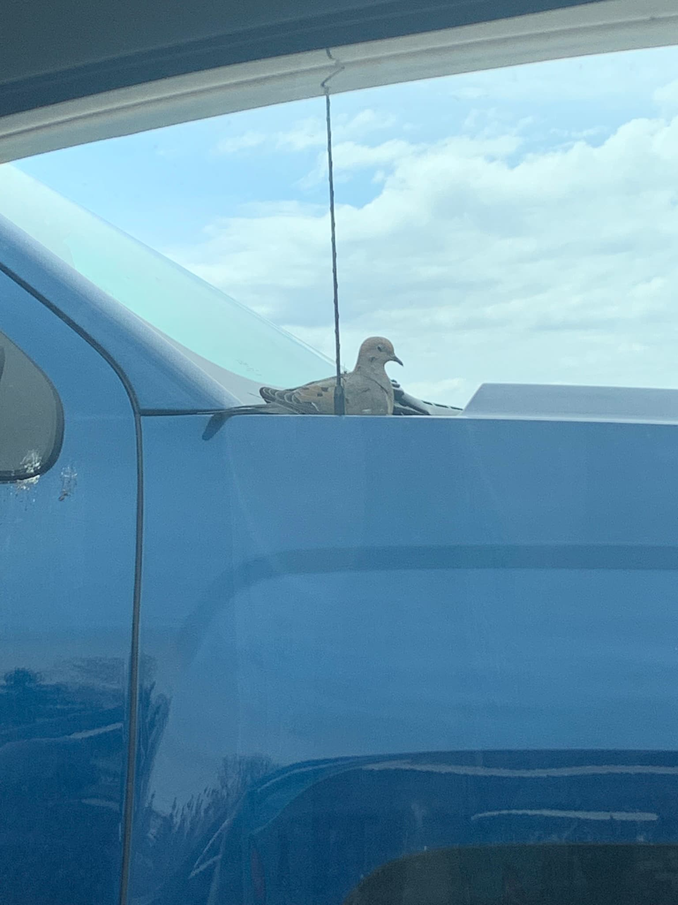
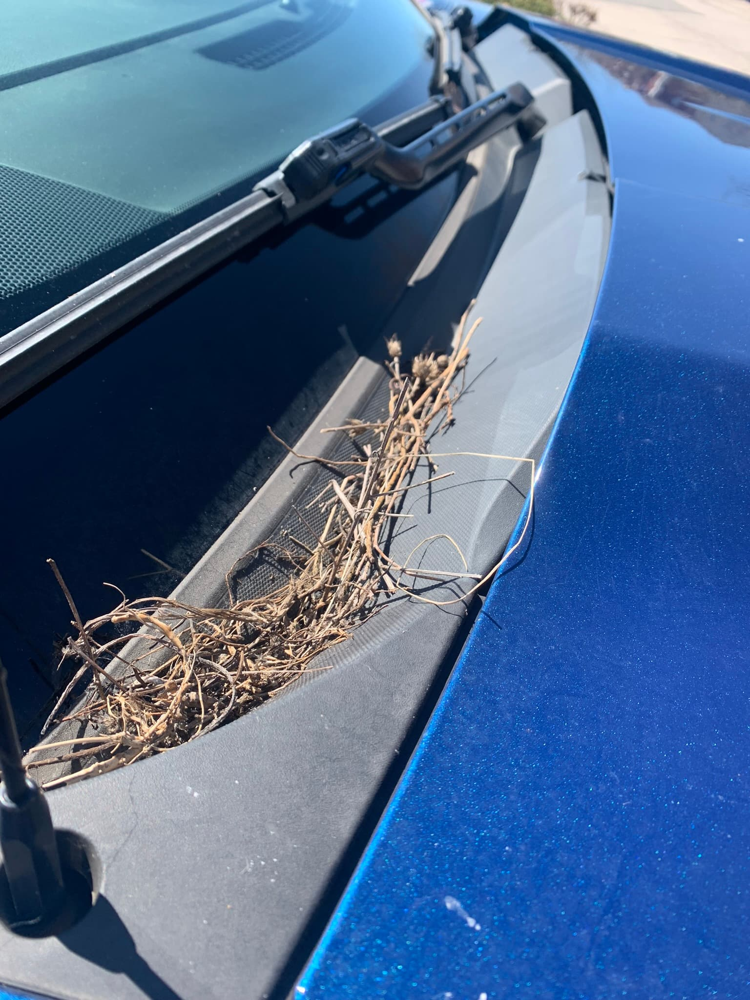

Helpful Wildlife Resources
Wildlife situations can vary widely. Understanding how to respond safely and when to seek help is an important part of humane coexistence.
📞 When to Seek Professional Help
- Injured or visibly sick animals
- Orphaned young animals observed alone for extended periods
- Animals trapped in structures, fencing, or debris
- Wildlife showing abnormal or aggressive behavior
- Animals that may be suffering from exposure or dehydration
When in doubt, it is always safer to observe from a distance and consult a professional rather than intervene directly.
⚠️ Important Reality About Wildlife Rehabilitation
Wildlife rehabilitators are trained professionals who operate under strict state and federal regulations. Not all animals can be accepted into rehabilitation care due to capacity limits, legal restrictions, or species-specific licensing rules.
In some cases, severely injured wildlife may need to be humanely euthanized to prevent prolonged suffering. While this can be difficult, it is sometimes considered the most ethical option when recovery is not possible.
This is why contacting a professional as early as possible is extremely important—they can assess the situation and determine the most humane outcome.
🚚 Safe Wildlife Transport Guidelines
If you are instructed by a professional to transport an injured animal, safety for both you and the animal is essential.
Key guidelines include:
- Use a secure container such as a pet carrier, tote, or shoebox with ventilation holes
- Line the container with a towel for comfort and stability
- Avoid direct contact with the animal whenever possible
- Keep the environment dark, quiet, and calm during transport
- Cover the container with a light towel or sheet to reduce visual stress
- Turn off music or radio during transport
- Keep talking and noise to a minimum
- Do not offer food or water unless specifically instructed by a rehabilitator
- For baby animals, maintain warmth using a wrapped warm (not hot) water bottle or rice sock, avoiding direct contact
- Do not give human food or pet formula to baby
wildlife
- Improper feeding can do more harm than good
- Wild animals need species-specific nutrition and often cannot digest human, cat, or dog formulas properly
- Incorrect nutrition can lead to serious illness or even death
🧰 Wildlife Emergency Kit
A simple wildlife emergency kit can help you respond quickly and safely if you encounter an injured animal. This kit is not for treatment, but for safe containment and transport until professional help is available.
Recommended items include:
- Sturdy shoebox, pet carrier, or plastic tote with ventilation holes
- Soft towels or cloths for lining and covering the animal
- Thick work gloves (welding gloves are ideal for protection)
- Nitrile or latex gloves for light handling
- Hand warmers for cold or neonatal animals
- Headlamp or flashlight for nighttime emergencies
- Pliers or nippers for safely removing animals caught in debris (only if safe to do so)
⚖️ Wildlife Laws, Permits, and Responsibility
Many wildlife species are protected by state or federal laws, and handling, relocating, or removing animals without proper permits may be illegal.
This also applies to hunting and wildlife management activities. Depending on the species and time of year, specific licenses, permits, and seasonal restrictions may apply.
Always check your local state wildlife agency regulations before taking any action involving wildlife. Illegal handling or relocation can result in fines or legal consequences.
🪺 Bird Nesting Law
Many native bird species are protected under federal law, including the Migratory Bird Treaty Act. This law makes it illegal to disturb, remove, or destroy active nests containing eggs or chicks for many species.
If birds are nesting in an unwanted location, intervention must be timed carefully:
- Before nesting begins, deterrents may be used to discourage nesting
- Once eggs are present, the nest is legally protected in many cases
- Active nests should not be removed or disturbed without proper authorization
Because of these protections, prevention is the safest and most effective approach when managing nesting wildlife.
For example, birds may begin building nests in inconvenient locations such as vehicles or entryways. If the nest is still being constructed and does not contain eggs, it can typically be removed to discourage nesting in that location. However, once eggs are present, the nest should be left undisturbed.


Doves are known for building very simple, loosely constructed nests using whatever materials are nearby. In this case, the nest was made up of small twigs, dried grasses, and plant stems—likely collected from the nearby pond area. You can also see bits of seed pods and other natural debris mixed in.
Unlike many birds, doves do not build tightly woven nests. Instead, they create a basic platform structure, often on flat, stable surfaces such as tree branches—or, in some cases, man-made objects like vehicles.
🌎 Everyday Actions That Protect Wildlife
Many wildlife injuries are preventable. The following everyday actions highlight common human-related risks and simple steps that can significantly reduce harm to wildlife in both urban and suburban environments.
- 🗑️ Dispose of trash properly
- Litter such as cans, bottles, and plastic rings can trap animals
- Wildlife may become stuck, injured, or unable to escape
- 🪟 Prevent window collisions
- Birds often cannot see glass and may strike windows
- Use decals, screens, or patterns to break up reflections
- Keep feeders either very close to windows or far away to reduce impact risk
- 🐱 Keep cats indoors or supervised outdoors
- Free-roaming domestic cats are one of the leading human-related causes of bird and small mammal mortality
- They have contributed to population declines and extinctions of wildlife species, especially in vulnerable island ecosystems
- Even well-fed cats will instinctively hunt wildlife
- Supervised outdoor time or enclosed outdoor spaces (such as “catios”) can reduce wildlife impact
- 🚗 Drive with wildlife in mind
- Reduce speed in areas where wildlife crossings are common
- Stay alert, especially at dawn and dusk when animals are most active
- If safe to do so, slow down or stop to avoid hitting an animal
- Always prioritize your safety and the safety of others over wildlife
- 🌲 Check for wildlife before tree or brush removal
- Inspect trees, shrubs, and structures for nests or dens before removal
- Avoid major removal during peak baby season (spring through early summer)
- When possible, delay removal until young animals have matured and left
- 🧴 Limit use of pesticides and chemicals
- Chemicals can poison wildlife directly or through food sources
- Consider natural or wildlife-safe alternatives when possible
- 🎃 Avoid synthetic decorations like fake spider webs
- Artificial webbing can entangle birds and small animals
- These materials do not break down easily and can cause serious injury
- 🎣 Handle fishing gear responsibly
- Discarded hooks and fishing line can injure birds, turtles, and other wildlife
- Always collect and properly dispose of unused or broken gear
- 💀 Avoid using rodenticides (rat poison)
- These poisons can move up the food chain
- Predators such as hawks, owls, and foxes may die after consuming poisoned prey
- 🪶 Consider non-lead ammunition
- Lead fragments can remain in carcasses and gut piles
- Scavengers and raptors may ingest lead, leading to poisoning and death
Choosing wildlife-safe alternatives and reducing environmental hazards helps protect not only individual animals, but entire ecosystems.
🌐 Wildlife Assistance Resource
To locate licensed wildlife rehabilitators in your area, use the official directory:
Humane World for Animals Wildlife Rehabilitator Directory
This resource connects you with trained professionals who can provide species-specific and legally compliant care guidance.